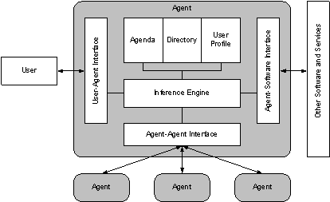
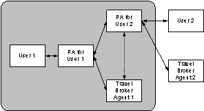
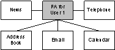
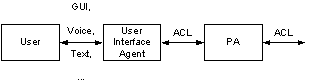
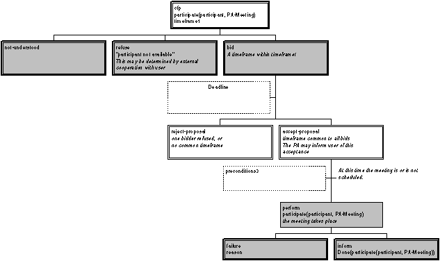
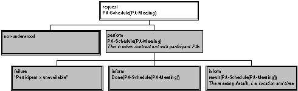
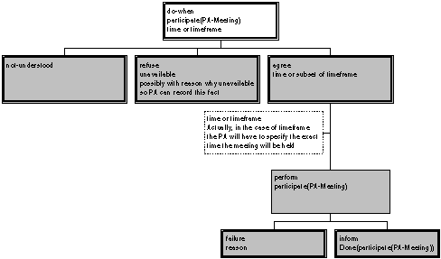

FOUNDATION FOR INTELLIGENT PHYSICAL AGENTS
FIPA Personal Assistant Specification
|
Document title |
FIPA Personal Assistant Specification |
||
|
Document number |
XC00083B |
Document source |
FIPA Architecture Board |
|
Document status |
Experimental |
Date of this status |
2001/08/10 |
|
Supersedes |
FIPA00022 |
||
|
Contact |
fab@fipa.org |
||
|
Change history |
|||
|
2000/10/17 |
Approved for Experimental |
||
|
2001/08/10 |
Line numbering added |
||
© 2000 Foundation for Intelligent Physical Agents - http://www.fipa.org/
Geneva, Switzerland
|
Notice |
|
Use of the technologies described in this specification may infringe patents, copyrights or other intellectual property rights of FIPA Members and non-members. Nothing in this specification should be construed as granting permission to use any of the technologies described. Anyone planning to make use of technology covered by the intellectual property rights of others should first obtain permission from the holder(s) of the rights. FIPA strongly encourages anyone implementing any part of this specification to determine first whether part(s) sought to be implemented are covered by the intellectual property of others, and, if so, to obtain appropriate licenses or other permission from the holder(s) of such intellectual property prior to implementation. This specification is subject to change without notice. Neither FIPA nor any of its Members accept any responsibility whatsoever for damages or liability, direct or consequential, which may result from the use of this specification. |
Foreword
The Foundation for Intelligent Physical Agents (FIPA) is an international organization that is dedicated to promoting the industry of intelligent agents by openly developing specifications supporting interoperability among agents and agent-based applications. This occurs through open collaboration among its member organizations, which are companies and universities that are active in the field of agents. FIPA makes the results of its activities available to all interested parties and intends to contribute its results to the appropriate formal standards bodies.
The members of FIPA are individually and collectively committed to open competition in the development of agent-based applications, services and equipment. Membership in FIPA is open to any corporation and individual firm, partnership, governmental body or international organization without restriction. In particular, members are not bound to implement or use specific agent-based standards, recommendations and FIPA specifications by virtue of their participation in FIPA.
The FIPA specifications are developed through direct involvement of the FIPA membership. The status of a specification can be either Preliminary, Experimental, Standard, Deprecated or Obsolete.More detail about the process of specification may be found in the FIPA Procedures for Technical Work. A complete overview of the FIPA specifications and their current status may be found in the FIPA List of Specifications. A list of terms and abbreviations used in the FIPA specifications may be found in the FIPA Glossary.
FIPA is a non-profit association registered in Geneva, Switzerland. As of January 2000, the 56 members of FIPA represented 17countries worldwide. Further information about FIPA as an organization, membership information, FIPA specifications and upcoming meetings may be found at http://www.fipa.org/.
Contents
2.2 Meeting Scheduling Services
2.3 Information Management Services
4.2.3 Participate in a Meeting
One central class of agents is that of a Personal Assistant (PA). A PA is a software agent that acts semi-autonomously for and on behalf of a user, modelling the interests of the user and providing services to the user or other users and PAs as and when required. A PA is like a secretary, it accomplishes routine support tasks to allow the user to concentrate on their real job. It is unobtrusive but ready when needed and rich in knowledge about user and their areas of work.
The notion of a PA is very broad. There are many internal and external functions and services that can and will be used to provide and extend a PA's basic functionalities. In fact, such encapsulation of new services is a critical requirement where the interoperability of a PA's functions and services is desirable. The use of agent technology to support a PA helps in achieving this requirement.
Examples of such functions and services include:
· Managing a user's diaries,
· Filtering and sorting email,
· Managing a user's desktop environment,
· Managing a user's activities, plans and tasks,
· Locating and delivering multimedia information,
· Recommending entertainment,
· Purchasing desired items, and,
· Planning travel.
While this specification focuses on the generic requirements for a PA application, other FIPA specifications, such as [FIPA00080] and [FIPA00081], also include the notion of personal assistance for specific applications. The Personal Travel Assistant (PTA) service defined in [FIPA00080] is different from a PA service since the PTA is an integrated system which spans a particular market segment of the electronic marketplace; the PA provides a user-oriented front-end to a wide variety of different services, one of which may be a PTA.
In general, a PA comprises (see Figure 1):
· Intelligence and associated capabilities such as rationality (reasoning and planning) and adaptability/learning,
· Knowledge including facts, rules and adapted/learned knowledge for and about an end-user,
· Interaction capabilities and facilities with the user, other agents and software and hardware services and functions, and,
· The services and functions and their procedures for the agent to work with them.
The scope of this composite is limited to the tasks which are given by the user as goals and preferences for behaviour. Other agents will also exist and interact with the PA, but such other agents will not tend to represent particular user's preferences or access authority and other differentiators.

Figure 1: Personal Assistant Reference Model
The reference model include the following interfaces and protocols of interaction that are candidates for standardisation:
· User-agent dialogue,
· Multi-modal user-agent interface,
· Agent-agent communication interface,
· Protocols for agent-agent interaction,
· Agent-software interfaces,
· Agent-software communication protocols,
· Agent-function interfaces, and,
· Function interoperability interfaces and mechanisms.
Multi-modality is the ultimate goal for human-agent interfaces. As a user interacts with a real PA, he/she can speak face-to-face with the PA or over the phone. Obviously, unconstrained natural language comprehension is also desirable. However, as first steps toward this general goal, multi-modal interaction is taken not as requirement for all agents to support all modalities, but merely that any single application should be able to select the one or more modalities required for the application. The composition of the PA should be media-independent in order to allow for this choice and otherwise provide the multi-modal conversions required, such as converting text to speech in order to pass information over the phone.
One of the basic functions of a PA is the management of the user's directory which includes telephone numbers, addresses and personal and useful information about them. This information facilitates responses the PA may provide to user's needs in an intelligent way, based on the context of the request. For example, if the user asks to call an organisation and the PA, by reference to the opening and closing times, notices that the call cannot be made then it will suggest alternative actions by inferring the user's possible intentions on the basis of the services provided by the organisation. A request for a call to a specific travel agency out of opening hours may result in the PA suggesting contacting a 24 hour call centre of an airline company.
The PA includes a calendar facility, that among other things can be used for scheduling of meetings and negotiation with users and other agents. This functionality includes:
· Identifying a mutually appropriate time for all participants to attend a meeting,
· Reserving an appropriate venue for the meeting,
· Organising associated facilities,
· Issuing reminders to all participants,
· Handling any problems which might arise at a later date, and,
· Cancelling meetings.
This is a very large and nebulous set of tasks but also addresses one of the most critical needs for intelligent personal assistants. Most professionals are now inundated with too many sources of information and generally this is called information overload. An agent can semi-autonomously filter, sort or otherwise respond to all these sources to help off-load some of the more mundane tasks these professionals now must do themselves. Such task include:
· Email and news filtering,
· Sorting and prioritising received information, and,
· Automatically responding or forwarding information to another user.
A key aspect of such information management is not just filtering out the low priority information, but also providing the timely delivery of high priority items; anywhere, anytime, anyhow. Such delivery is dependent on the user's location, media/equipment limitations and preferences. For instance, an agent can be instructed to deliver important email to an end-user even if the user only has a mobile phone by converting the text to speech. Of course, this same text to speech delivery of email over a mobile phone can be applied to any text-based information source such as NNTP news, stock quotes, etc. Furthermore, given the cost of mobile phone connectivity, other technologies such as text summarisation can be employed, for the most efficient delivery. The provision of such summarisation and media to media transformation could be provided, for example, via external services.
Even under the most constrained situations, such as the user only having a pager, a PA can at least notify the user about the existence and accessibility of an important new multimedia document. Though the pager device cannot deliver the information, the PA can notify the user of the appropriate equipment in the locality of the user that is available where the multimedia document could be sent.
A less well-developed but equally important aspect of information management is the personal storage and retrieval of information. Even personal computer storage is becoming difficult to manage since files are often duplicated, directory structures are haphazard and the file systems themselves does not provide rich indexing and content search facilities. Here, a PA can be asked to file and retrieve documents or even isolated bits of information, much like a personal secretary manages paper-based documents in the office.
A PA can assist in planning the user's trip by interacting with the user, other agents and external directory services and thus providing an appropriate plan of an intended trip and other guidance services (see [FIPA00079] for more information). In particular, the PA may assume much of the functionality of the PTA agent.
The chosen scenario to illustrate the PA application is that of arranging meetings among several participants, located across companies and using different calendar management systems. This has been chosen for several reasons:
· The scenario is instantly applicable to real-life situations,
· Current solutions are unwieldy and proprietary, making integration across networks and other services difficult,
· The scenario can be easily extended to incorporate further services, and,
· This class of application has been widely studied, with many agent-based approaches being developed (for example, see [Kozieriok1993]).
The scenario lends itself well to agent technology, due to the need for:
· User profiling,
· Integration of heterogeneous software,
· Action on a user's behalf (semi-autonomy), and,
· Local control (in particular, of the user's calendar).
The selected service is an integration of meeting scheduling and travel assistance. The user asks the agent to set up a meeting with several participants and because the meeting may involve travelling for some of the participants, travel planning forms part of the meeting scheduling.
In this test application, the PA provides a single unified interface to the user, and is represented as a single agent, even though it may actually be composed of several agents (see Figure 2). Each user is represented by a PA and they negotiate with each other to find an adequate meeting place and time. They interact with Travel Broker Agents (TBAs) to find out about travel schedules, etc. (see [FIPA00079]).

Figure 2: Agent Interactions in the Personal Assistant Application Scenario
The PA may make use of several existing programs to perform its tasks. A possible set of relevant software for this test application is shown in Figure 3.

Figure 3: Integration of External Software
This specification defines a set of scenarios based on one particular aspect of the PA role; that of arranging appointments for activities, such as meetings, which involve a number of participants. The PAs of the participants must cooperate to ensure that the meeting is arranged for a time and place which is mutually acceptable to all their users.
· Basic scenario
User 1 is chairman of a committee and asks his PA to arrange a committee meeting.
· Sub-scenario 1
User 1 suggests a specific time, duration and location for the meeting. The simplest case is that all participants are required to attend the meeting.
· Sub-scenario 2
User 1 suggests a range of possible times to start the meeting. The duration and location of the meeting remain specific.
· Sub-scenario 3
User 1 suggests a range of possible times to start the meeting as well as a set of locations at which the meeting can take place.
In the scenarios, only those participants which have PAs will be considered in the agent-based negotiation of the meeting. Other possible interfaces (directly between personal agent and another human) will not be required.
It is up to the individual PA application to associate PAs with their users, that is, if the initiator enters a list of participants to the meeting, the initiator's agent needs to be able to communicate with the PAs of the participants. The above sub-scenarios are in order of increasing sophistication and difficulty of implementation. Further scenarios, which are not directly under consideration in this specification, could be achieved by allowing negotiation about the duration and actual participants in the meeting.
A field trial prototype should demonstrate cooperative meeting arrangement involving several PAs. It should implement at least the functionality required by the simplest sub-scenario (1) and preferably more. One or more of the PAs should make use of travel planning services provided by a PTA field trial system. It is preferable that interoperability of at least two independently-designed and implemented types of PA be demonstrated.
Humans may be viewed as agents in their own right and that their interaction with software and agents may also be achieved using ACL. However, since humans do not speak ACL directly, some translation service is required to present a user-friendly interface. This may be accomplished by using a special user interface agent as illustrated in Figure 4.

Figure 4: Human-Agent Interaction Via a User Interface Agent
Thus, the following interactions between users and their PAs could be:
· User to PA: Give task to arrange meeting (including reporting requirements),
· PA to User: Give progress status of task (at least success or failure),
· PA to User: Require permission to commit to the meeting,
· User to PA: Give permission to commit to the meeting,
· PA to User: Inform of commitment made, and,
· User to PA: Give degree of delegation authority.
This section describes a set of frames, that represent the classes of objects in the domain of discourse within the framework of the FIPA-PA ontology.
The following terms are used to describe the objects of the domain:
· Frame. This is the mandatory name of this entity, that must be used to represent each instance of this class.
· Ontology. This is the name of the ontology, whose domain of discourse includes the parameters described in the table.
· Parameter. This is the mandatory name of a parameter of this frame.
· Description. This is a natural language description of the semantics of each parameter.
· Presence. This indicates whether each parameter is mandatory or optional.
· Type. This is the type of the values of the parameter: Integer, Word, String, URL, Term, Set or Sequence.
· Reserved Values. This is a list of FIPA-defined constants that can assume values for this parameter.
This type of object represents the description of a meeting event. The syntax and format of the :details parameter is given in [RFC2445].
|
Frame Ontology |
meeting-description FIPA-PA |
|
||
|
Parameter |
Description |
Presence |
Type |
Reserved Values |
|
identifier |
The identifier of the meeting. |
Mandatory |
String |
|
|
user |
The user organising the meeting. |
Optional |
String |
|
|
details |
The details of the meeting. |
Mandatory |
String |
See [RFC2445] |
The following tables define usage and semantics of the functions that are part of the FIPA-PA ontology.
The following terms are used to describe the functions of the FIPA-PA domain:
· Function. This is the symbol that identifies the function in the ontology.
· Ontology. This is the name of the ontology, whose domain of discourse includes the function described in the table.
· Supported by. This is the type of agent that supports this function.
· Description. This is a natural language description of the semantics of the function.
· Domain. This indicates the domain over which the function is defined. The arguments passed to the function must belong to the set identified by the domain.
· Range. This indicates the range to which the function maps the symbols of the domain. The result of the function is a symbol belonging to the set identified by the range.
· Arity. This indicates the number of arguments that a function takes. If a function can take an arbitrary number of arguments, then its arity is undefined.
|
Function |
meet |
|
|
Ontology |
FIPA-PA |
|
|
Supported by |
PA |
|
|
Description |
The execution of this function has the effect asking the PA to negotiate a meeting between the initiator and the attendees using the FIPA-Contract-Net interaction protocol (see [FIPA00029]). Once the details of a meeting have been decided, then it can be scheduled (see section 4.2.2, Schedule a Meeting). The first argument contains the details of the meeting to schedule, the second argument contains a list of time frames at which it is proposed that the meeting is scheduled and the third object is the duration of the meeting. |
|
|
Domain |
meeting-description, Sequence of DateTime (see [FIPA00070]), Integer |
|
|
Range |
The execution of this function results in a change of the state, but it has no explicit result. Therefore there is no range set. |
|
|
Arity |
3 |
|
|
Function |
schedule |
|
|
Ontology |
FIPA-PA |
|
|
Supported by |
PA |
|
|
Description |
The execution of this function has the effect asking the PA to schedule a meeting between the initiator and the attendees. The first argument contains the details of the meeting to schedule, the second argument contains the time frame of the meeting. |
|
|
Domain |
meeting-description, DateTime |
|
|
Range |
The execution of this function results in a change of the state, but it has no explicit result. Therefore there is no range set. |
|
|
Arity |
2 |
|
|
Function |
participate |
|
|
Ontology |
FIPA-PA |
|
|
Supported by |
PA |
|
|
Description |
The execution of this function has the effect of asking the PA to participate in a meeting. The first argument contains the name of the participant and the second argument contains the details of the meeting to schedule. |
|
|
Domain |
String, meeting-description |
|
|
Range |
The execution of this function results in a change of the state, but it has no explicit result. Therefore there is no range set. |
|
|
Arity |
2 |
|
|
Function |
travel |
|
|
Ontology |
FIPA-PA |
|
|
Supported by |
PA |
|
|
Description |
The execution of this function has the effect of asking the PA to schedule travel for the initiator. The first argument contains the details of the trip to schedule, the second argument contains a list of time frames at which it is proposed that the trip is scheduled and the third object is the duration of the trip. |
|
|
Domain |
trip-summary (see [FIPA00080]), Sequence of DateTime, Integer |
|
|
Range |
The execution of this function results in a change of the state, but it has no explicit result. Therefore there is no range set. |
|
|
Arity |
3 |
|
This normative interaction protocol (see Figure 5) is used for negotiation of meetings (more accurately, negotiation about the action of participating in the meetings) among the PAs. Whereas the intent of the original contract net protocol (see [FIPA00029]) was to select the best bid from a set of submitted bids, here the accept-proposal message is used only if all bids (that is, time frames to attend the meeting) have a time frame in common, which becomes the time frame that is chosen. As the bids of contract net imply firm commitment, the PAs need to check with their users and the initiator agent.

Figure 5: Negotiating Meeting Details Using the Contract Net Interaction Protocol
This informative interaction protocol (see Figure 6) is used between the user and their PA and is modelled using an order protocol that can be used to order the initial negotiation of a meeting.

Figure 6: Scheduling a Meeting Using an Order Interaction Protocol
This informative interaction protocol (see Figure 7) is used between the user and their PA and is modelled using the FIPA-Request-When interaction protocol (see [FIPA00028]) to confirm the availability of the user at a suggest meeting time.

Figure 7: Confirming a Meeting using the Request-When Interaction Protocol
1. This example will schedule an hour long meeting with colleagues for a specific time on a given day:
(cfp
:sender
(agent-identifier
:name UA-John)
:receiver (set
(agent-identifier
:name PA-Peter))
:ontology FIPA-PA
:protocol FIPA-ContractNet
:reply-with Response123
:reply-by 19960315T083000000
:conversation-id UA-John345
:content (meet
(meeting-description
:identifier John123
:agent "Joe Bloggs"
:details (
BEGIN: VCALENDAR
VERSION: 1.0
BEGIN: VEVENT
UID: 123
SUMMARY: Test
ATTENDEE: Joe Bloggs
ATTENDEE; ROLE=ORGANIZER: John Doe
LOCATION: Area 51
CATEGORIES: X-FIPA-Test
DESCRIPTION: This is just a test meeting. Please do not attempt to attend it.
SEQUENCE: 0
PRIORITY: 0
DTSTART: X-FIPA-UnderNegotiation
DTEND: X-FIPA-UnderNegotiation
STATUS: UNDER NEGOTIATION
X-FIPA-ORGANIZER: John Doe
END: VEVENT
END: VCALENDAR
)
(sequence 19960415T083000000)
60))
[FIPA00023] FIPA Agent Management Specification. Foundation for Intelligent Physical Agents, 2000. http://www.fipa.org/specs/fipa00023/
[FIPA00028] FIPA Request When
Interaction Protocol Specification. Foundation for
Intelligent Physical Agents, 2000.
http://www.fipa.org/specs/fipa00028/
[FIPA00029] FIPA Contract Net Interaction Protocol Specification. Foundation for Intelligent Physical Agents, 2000. http://www.fipa.org/specs/fipa00029/
[FIPA00070] FIPA ACL Message Representation
in String Specification. Foundation for Intelligent
Physical Agents, 2000.
http://www.fipa.org/specs/fipa00070/
[FIPA00079] FIPA Agent Software Integration Specification. Foundation for Intelligent Physical Agents, 2000. http://www.fipa.org/specs/fipa00079/
[FIPA00080] FIPA Personal Travel Assistance Specification. Foundation for Intelligent Physical Agents, 2000. http://www.fipa.org/specs/fipa00080/
[FIPA00081] FIPA Audio/Visual
Entertainment and Broadcasting Specification.
Foundation for Intelligent Physical Agents, 2000.
http://www.fipa.org/specs/fipa00081/
[Kozieriok1993] A Learning Interface Agent for Scheduling Meetings, Kozieriok, R. and Maes, P. International Workshop on Intelligent User Interfaces, AMC-SIGCHI, AMC Press, Florida, 1993.
[RFC2445] Internet Calendaring and Scheduling
Core Object Specification (iCalendar). Request for Comments, 1998.
http://www.ietf.org/rfc/rfc2445.txt